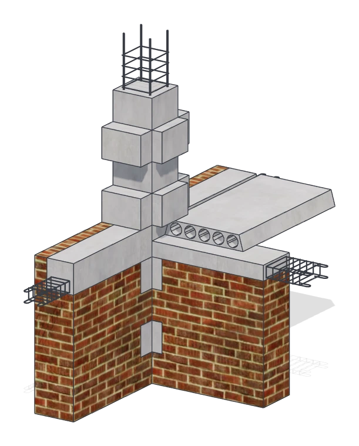

READ & EXPLORE
墙体章节
08节从整体认识，走向构造细节
01学习小节
墙体概述
从一片墙的承重、围护与分隔任务出发，梳理材料、连接和剖面层次，建立阅读墙体构造的整体顺序。
02学习小节
墙体在建筑中的作用
沿楼板到基础的传力路径判断墙体作用，再比较外墙的环境边界与隔墙的空间边界，分清三种任务的联系。
03学习小节
墙体的类型
分别按位置、结构角色、材料和施工方法认识墙体，学会把多个分类维度组合起来描述具体做法。
04学习小节
砌体结构
认识块材、砂浆与组砌怎样共同工作，结合承重布置、排块尺度和拉结措施理解砌体的稳定与整体性。
05学习小节
隔墙
比较块材、轻骨架与条板三类隔墙，沿支承、连接和接缝检查稳定、隔声、防火与变形协调。
06学习小节
墙体的设计要求
从安全、保温、防潮、隔声和防火要求确定墙体层次，在洞口、转角与墙脚检查性能边界的连续性。
07学习小节
墙体细部构造
沿墙脚、洞口和墙顶逐处读节点，认识防潮层、散水、过梁与圈梁，追踪排水、连接和施工顺序。
08学习小节
墙面装修
比较抹灰、涂料、粘贴与机械连接饰面，梳理基层、支承层和面层的职责，处理室内外接缝与收口。
8 节正文已开放，涵盖墙体作用、砌体、隔墙、细部与装修。结合构造原理与节点模型理解连接做法